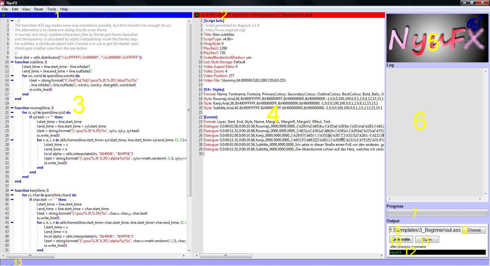
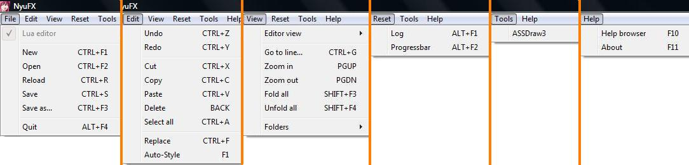

Beware: this GUI documentation is from version 1.5! Some changes aren't listed yet.

Lua editor title and opened file. Lamp on the left turns on when file is saved before.
ASS editor title and opened file. Lamp on the left turns on when file is saved before.
Lua editor with Lua syntax highlighting and folding. Drop file to open it.
Containing code will be executed to generate the output file.
ASS editor with INI syntax highlighting. Drop file to open it.
Containing code is read and parsed by 'io.load_ass' before Lua code execution.
Official NyuFX logo.
Process log. Additional entries by call of Lua function 'print'. Useful for debugging.
Progressbar. Set by call of Lua function 'io.progressbar'. Useful for debugging.
Output file, possible by drop. Generated by opened files in editors.
File dialog to choose output file.
Start/cancel of generation process.
Open output file.
MS-DOS command, executed after successful process run.
Statusbar. Shows information about menu entries.

File
NONE/Lua editor/ASS editor: Currently focused editor. Some operations are depending on this focus.
New: Clears editor title and content. No file is opened in editor anymore.
Open: Opens file dialog to open a file in editor.
Reload: Reloads content of currently opened file in editor.
Save: Saves content of currently opened file in editor.
Save as...: Saves content to chosen file in file dialog.
Quit: Closes application.
Edit
Undo: Undos last action.
Redo: Repeal undo action.
Cut: Cuts editor selection to systemwide clipboard.
Copy: Copies editor selection to systemwide clipboard.
Paste: Pastes text of systemwide clipboard into editor.
Delete: Deletes backwards one character in editor.
Select all: Selects the whole text in editor.
Replace: Replace dialog for chosen editor.
If text is selected, 'Replace all' just replaces hits in selection.
Auto-Style: Formats text in editor. Lua editor:
Limits spaces to one blank except indents.
Erases pre- and postspace of lines.
Limits line breaks to 3 in row.
Defines fitting indents. ASS editor:
Erases pre- and postspace of lines.
Limits line breaks to 3 in row.
View
Editor view
Lua editor: Makes Lua editor (in-)visible.
ASS editor: Makes ASS editor (in-)visible.
Go to line...: Moves caret to chosen line in editor.
Zoom in: Nearer view of editor.
Zoom out: Farther view of editor.
Fold all: Folds all code in Lua editor.
Unfold all: Unfolds all code in Lua editor.
Folders
Includes: Opens NyuFX include folder. All Lua files inside will be loaded before Lua editor file.
This folder works as automatic Lua environment extension.
Templates: Opens NyuFX templates folder. Place for template files for later reuse.
Tools: Opens NyuFX tools folder. All executables and links inside are listed in Tools menu at NyuFX startup.
Reset
Log: Clears text of log.
Progressbar: Sets progressbar status to 0%.
Tools
ASSDraw3: Appears if ASSDraw3 was checked by install of NyuFX.
All entries of Tools menu are executables or links in NyuFX tools folder.
Help
Help browser: Window to browse help files or search in web.